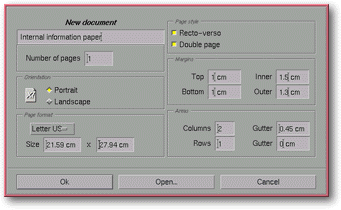

<!-- Documentation Xclamation (c)1994-2000 AXENE contact axene@axene.org>
<html>

<head>
<title>New Document</title>
</head>

<body BGCOLOR="#FFFFFF" BACKGROUND="Images/back.gif" TEXT="#000000">

<p ALIGN="right">  </p>

<p><br>
<br>
This dialog box selects the parameters for the document to be created. Characteristics of
the pages which make up a document are defined in this dialog box, but they may also be
modified individually from the '<a HREF="Box_Modify_Page.html">Page modification</a>'
dialog box. <br>
<br>
</p>

<hr>

<p><br>
</p>

<p align="center"> <br>
<small><i>Screen shot: New document dialog box </i></small><br>
</p>

<p><br>
</p>

<hr>

<p><br>
</p>

<h3>Left portion of the dialog box:</h3>

<ul>
  <li><a NAME="edit_document_name">The text field at the top of the box <b>modifies the
    document name.</b> <i>&quot;Untitled X&quot;&quot;</i> is the default name, where X is a
    number. If a document's name is changed, Xclamation automatically uses the new name as a
    default filename when saving. If a filename is not established upon the document's
    creation, it will be named when first saved. Document names are limited to 31 characters. </a><br>
    &nbsp;</li>
  <li><a NAME="nb_page_textfield">The <b>number of pages to be created</b> is chosen in the <i>&quot;Number
    of pages&quot;</i> text field. If the <i>&quot;Double Page&quot;</i> button is engaged,
    the number of pages listed corresponds to half the total number of doubled pages, in other
    words, a single page is counted as a front and back. </a><br>
    &nbsp;</li>
  <li><a NAME="orientation_frame">The <b>orientation of pages to be created</b> is selected in
    the <i>&quot;Orientation section&quot;</i>. The buttons have two positions: <br>
    &nbsp;<ol>
      <li></a><a NAME="portrait_button">The <i>&quot;Portrait&quot;</i> button displays pages on
        end, with the longest side positioned vertically. </a><br>
        &nbsp;</li>
      <li><a NAME="landscape_button">The <i>&quot;Landscape&quot;</i> button displays pages on
        their side, with the longest side positioned horizontally. </a><br>
        &nbsp;</li>
    </ol>
  </li>
  <li><a NAME="page_format_list">The roll-down <i>&quot;Page Format&quot;</i> menu <b>chooses
    page formats</b> from a list of frequently used formats. Select <i>&quot;Other&quot;</i>
    to choose non-standard page sizes. </a><br>
    &nbsp;</li>
  <li><a NAME="size_textfields">The <b>width and length of pages are defined</b> in the two <i>&quot;Size&quot;</i>
    text fields. Both values are expressed in centimeters and must be set between 1(cm) and
    300(cm). </a><br>
    &nbsp;</li>
</ul>

<p><br>
</p>

<h3>Right portion of the dialog box:</h3>

<ul>
  <li><a NAME="recto_verso_button">The <i>&quot;Front/Back&quot;</i> button <b>creates
    double-sided pages</b>. These alternate between left and right hand pages, beginning with
    a page on the right. A left-hand page will be displayed with a shadow on its left, and a
    right-hand page with a shadow on its right. </a><br>
    &nbsp;</li>
  <li><a NAME="double_page_button">The <i>&quot;Double Page&quot;</i> button <b>creates double
    pages</b>. They are displayed as two pages next to one another, divided by their mutual
    vertical border.<p><b>Note:</b> If front/back and double page modes are activated at the
    same time, the document will be laid out in magazine style: the first page on the right,
    the following pages doubled, and the last page on the left. There must be an even number
    of pages for the final page to end up on the left. </a></p>
    <p><br>
    &nbsp;</p>
  </li>
  <li><a NAME="margins_frame">The <i>&quot;Margins&quot;</i> section <b>defines magnetic
    margins</b> on each page to be created. Margins are displayed with a horizontal or
    vertical blue line. There are four margins to be defined: </a><br>
    &nbsp;<ol>
      <li><a NAME="top_margin_textfield">The <i>&quot;Top&quot;</i> text field defines the size of
        the <b>top margin</b>. Its value is expressed in centimeters and must be set between 0(cm)
        and 150(cm). </a><br>
        &nbsp;</li>
      <li><a NAME="intern_margin_textfield">The <i>&quot;Inside&quot;</i> text field defines the
        size of the <b>inside margin</b>. On a left-hand page the inside margin corresponds to the
        right margin, and on a right-hand page it corresponds to the left margin. Its value is
        expressed in centimeters and must be set between 0(cm) and 150(cm). </a><br>
        &nbsp;</li>
      <li><a NAME="bottom_margin_textfield">The <i>&quot;Bottom&quot;</i> text field defines the
        size of the <b>bottom margin</b>. Its value is expressed in centimeters and must be set
        between 0(cm) and 150(cm). </a><br>
        &nbsp;</li>
      <li><a NAME="extern_margin_textfield">The <i>&quot;Outside&quot;</i> text field defines the
        size of the <b>outside margin</b>. On a left-hand page the outside margin is on the left,
        and on a right-hand page it's on the right. It's value is expressed in centimeters and
        must be set between 0(cm) and 150(cm). </a><br>
        &nbsp;</li>
    </ol>
  </li>
  <li><a NAME="sector_frame">The <i>&quot;Areas&quot;</i> section adds magnetic lines to the
    pages being created. The four text fields in this section <b>define how space inside the
    margins</b> will be evenly distributed: </a><br>
    &nbsp;<ol>
      <li><a NAME="column_textfield">The <i>&quot;Columns&quot;</i> text field <b>sets the number
        of vertical sections</b> that will divide space within the margins. This value must be set
        between 1 and 100. </a><br>
        &nbsp;</li>
      <li><a NAME="column_gutter_textfield">On the same line, the <i>&quot;Gutter&quot;</i> text
        field <b>defines the space separating columns</b>. It's value is expressed in centimeters
        and must be set between 0(cm) and 20(cm). If two columns with a gutter value of 0(cm) are
        specified, a single vertical magnetic blue line will appear in the center of each page. In
        the same context if a gutter value of 1(cm) were specified, two vertical magnetic blue
        lines would appear, positioned symmetrically with respect to the center of the page and
        separated by a space 1(cm) wide. </a><br>
        &nbsp;</li>
      <li><a NAME="line_textfield">The <i>&quot;Rows&quot;</i> text field <b>defines the number of
        horizontal sections</b> that will divide space within the margins. This value must be set
        between 1 and 100. </a><br>
        &nbsp;</li>
      <li><a NAME="line_gutter_textfield">The <i>&quot;Gutter&quot;</i> text field <b>defines the
        space separating two rows</b>. This value is expressed in centimeters and must be set
        between 0(cm) and 20(cm). If two rows and a gutter value of 0(cm) are specified, a single
        horizontal magnetic blue line will appear in the center of each page. In the same context
        if a gutter value of 1(cm) were specified, two horizontal magnetic blue lines would
        appear, positioned symmetrically with respect to the center of the page and separated by a
        space 1(cm) in height. </a><br>
        &nbsp;</li>
    </ol>
  </li>
</ul>

<p><br>
</p>

<h3>Lower portion of the dialog box:</h3>

<ul>
  <li><a NAME="button_ok"><i>&quot;Ok&quot;</i> confirms the choices made, closes the dialog
    box and <b>creates a document with the specified characteristics</b>. </a><br>
    &nbsp;</li>
  <li><a NAME="button_load"><i>&quot;Open...&quot;</i> closes the dialog box without creating
    the document and <b>opens the '</a><a HREF="Box_File_Selectors.html#fs_load">Open document</a>'
    file selector</b>. <br>
    &nbsp;</li>
  <li><a NAME="button_cancel"><i>&quot;Cancel&quot;</i> <b>closes the dialog box</b> without
    creating the document. </a><br>
    &nbsp;</li>
</ul>

<p><br>
</p>

<hr>

<p ALIGN="right"></p>
</body>
</html>
